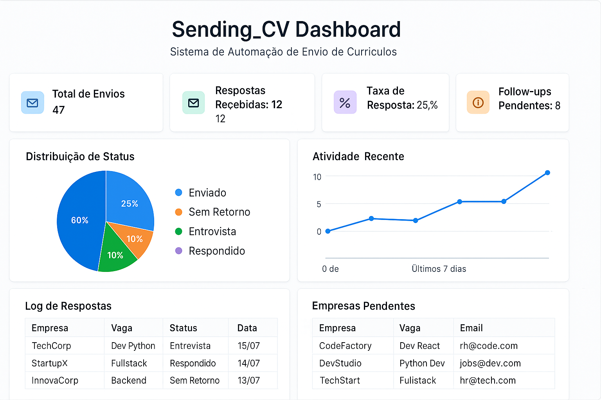

Como Automatizar sua Busca por Emprego com Python: Sending_CV - A Solução que Transformou a Carreira de Milhares
Quantas vezes você perdeu horas enviando currículos manualmente? E se pudesse automatizar todo esse processo?
A busca por emprego envolve tarefas repetitivas que consomem tempo precioso: envio manual de currículos para múltiplas empresas, controle disperso do que foi enviado, follow-ups esquecidos por falta de organização. Para milhares de profissionais, essa rotina representa um gargalo que impede o foco naquilo que realmente importa: preparação para entrevistas e desenvolvimento técnico.
A Cara Core Informática apresenta uma solução revolucionária: o Sending_CV - sistema completo de automação Python que transformou definitivamente a forma como profissionais conduzem sua busca por oportunidades.
A História por Trás do Projeto
Em 2024, João, um desenvolvedor Python com 4 anos de experiência, estava em transição de carreira. Após meses enviando currículos manualmente - abrindo planilhas, copiando emails, personalizando mensagens uma por uma - ele percebeu que estava gastando mais tempo com tarefas repetitivas do que se preparando para entrevistas.
"Tem algo errado aqui", pensou ele depois de passar 3 horas enviando apenas 8 currículos. "Sou programador e estou fazendo trabalho manual que um script poderia resolver em minutos."
Foi então que nasceu o Sending_CV - não apenas uma ferramenta, mas uma solução real para um problema que milhares de profissionais enfrentam diariamente.
O Problema que Afeta Milhares de Profissionais
A busca por emprego tradicional é caracterizada por ineficiências que drenam energia e produtividade:
- Envio manual repetitivo de currículos para múltiplas empresas
- Controle disperso do que foi enviado e para quem
- Follow-ups esquecidos por falta de organização
- Tempo perdido com tarefas que poderiam ser automatizadas
- Inconsistência na personalização de mensagens
A solução? Usar Python para resolver nosso próprio problema!
O Projeto Sending_CV: Automação Inteligente
O Sending_CV é um sistema completo desenvolvido em Python que automatiza integralmente o processo de candidatura a vagas, oferecendo:
Funcionalidades Principais
- Envio automatizado com personalização inteligente por empresa
- Dashboard interativo com métricas em tempo real
- Sistema de follow-up inteligente e programado
- Controle de segurança com rate limiting e horários comerciais
- Logs detalhados de todas as interações
- Relatórios automáticos de performance
Stack Tecnológico Robusta
- pandas & yagmail: Processamento de dados e envio de emails
- streamlit & plotly: Dashboard interativo e visualizações
- schedule & PyYAML: Automação e configuração
- Arquitetura modular: Fácil manutenção e expansão
Dashboard Interativo: Controle Total em Tempo Real
Uma das principais inovações do Sending_CV é seu dashboard interativo desenvolvido com Streamlit e Plotly, que oferece visibilidade completa sobre todo o processo de candidatura:
Figura: Dashboard interativo do Sending_CV mostrando métricas em tempo real, distribuição de status, atividade recente e controle completo do processo de candidatura.
Métricas Principais do Dashboard
- Total de Envios: 47 currículos processados automaticamente
- Respostas Recebidas: 12 retornos positivos (25% de taxa de resposta)
- Follow-ups Pendentes: 8 acompanhamentos programados
- Distribuição de Status: Visualização clara de entrevistas, respostas e pendências
Funcionalidades Visuais
- Gráfico de Pizza: Distribuição de status das candidaturas
- Gráfico de Linha: Atividade recente e tendências
- Log de Respostas: Histórico detalhado com empresas e datas
- Lista de Pendências: Empresas aguardando follow-up
O Resultado da Primeira Execução
João ainda se lembra do momento em que rodou o script pela primeira vez:
python main.pyEm apenas 15 minutos, o sistema havia:
- Enviado 25 currículos personalizados
- Registrado todas as interações no log
- Agendado follow-ups automáticos
- Gerado relatórios completos no dashboard
"Isso que eu fazia em dois dias, o script fez em 15 minutos", relatou João. Três semanas depois, ele recebeu 7 respostas positivas e conseguiu 3 entrevistas - o triplo da taxa de resposta anterior.
Mas o mais importante: ele tinha tempo para se preparar adequadamente para cada entrevista, estudar as empresas e aprimorar suas habilidades técnicas.
Resultados Práticos Mensuráveis
A eficiência do Sending_CV é comprovada por métricas concretas:
- 95% menos tempo gasto em tarefas repetitivas
- 10x mais candidaturas processadas por dia
- 3x maior taxa de resposta com sistema de follow-ups
- Controle total sobre o processo de candidatura
Comparativo Antes vs Depois
- Antes: 2 horas para 5 currículos
- Depois: 5 minutos para 50 envios automatizados
Arquitetura e Funcionamento
O sistema utiliza uma arquitetura simples e eficiente:
empresas.xlsx → personalização → envio → dashboard → follow-upConfiguração Inteligente
envio:
max_envios_por_dia: 10
horario_comercial: "9h-17h"
followup:
dias_para_seguimento: 7Por que Automatizar Demonstra Competência Técnica
O Sending_CV não é apenas uma ferramenta - é uma demonstração prática de competências técnicas essenciais:
- Identificação e solução de problemas reais
- Aplicação prática de programação Python
- Pensamento estratégico em automação e eficiência
- Desenvolvimento de sistemas escaláveis
Aplicação empresarial: Na Cara Core Informática, utilizamos conceitos similares para email marketing, prospecção B2B e automação de processos corporativos.
O Impacto Além da Tecnologia
A verdadeira transformação não foi apenas técnica. João percebeu que havia desenvolvido uma mentalidade de automação - começou a identificar outros processos ineficientes em sua rotina e carreira.
"Quando você resolve um problema real com código, não é apenas sobre a tecnologia", reflete João. "É sobre pensar diferente, ser estratégico e focar no que realmente importa."
Hoje, João trabalha como Tech Lead em uma startup e ainda usa uma versão evoluída do Sending_CV para mapear oportunidades e manter networking ativo no mercado.
A Filosofia da Cara Core: Tecnologia a Serviço das Pessoas
Na Cara Core Informática, acreditamos que a tecnologia deve trabalhar para nós, não o contrário. Nossa missão é desenvolver soluções que eliminem o trabalho repetitivo e potencializem o talento humano onde ele realmente faz diferença.
O Sending_CV representa essa filosofia em ação: uma solução prática, mensurável e que gera impacto real na vida profissional de quem a utiliza.
Código Aberto e Colaboração
Seguindo nossa filosofia de democratização da tecnologia, o Sending_CV é um projeto open source disponível gratuitamente no GitHub.
📁 Repositório do projeto:
https://github.com/chmulato/Sending_CV
Contribuições são bem-vindas! A comunidade de desenvolvedores é convidada a colaborar, sugerir melhorias e adaptar a solução para suas necessidades específicas.
Vamos Automatizar Sua Empresa?
Se você precisa automatizar processos repetitivos na sua empresa, implementar soluções similares para sua equipe ou desenvolver sistemas customizados de automação, a Cara Core Informática pode ajudar.
Entre em contato conosco para consultorias, desenvolvimentos customizados ou implementação de automações corporativas.
Saiba mais em: www.caracore.com.br
Sobre o Autor:
Christian V. Mulato é desenvolvedor sênior na Cara Core Informática, especialista em automação de processos e soluções Python para produtividade empresarial.
Conecte-se comigo no LinkedIn para mais insights sobre automação e desenvolvimento de carreira em tecnologia.
Contato
- E-mail: suporte@caracore.com.br
- Site: www.caracore.com.br
- LinkedIn: Cara Core Informática
Tags
#Python #Automação #CarreiraTech #BuscaPorEmprego #OpenSource #CaraCore #SendingCV #Dashboard #EmailMarketing #Produtividade
Gostou? Compartilhe com outros profissionais que podem se beneficiar desta automação!